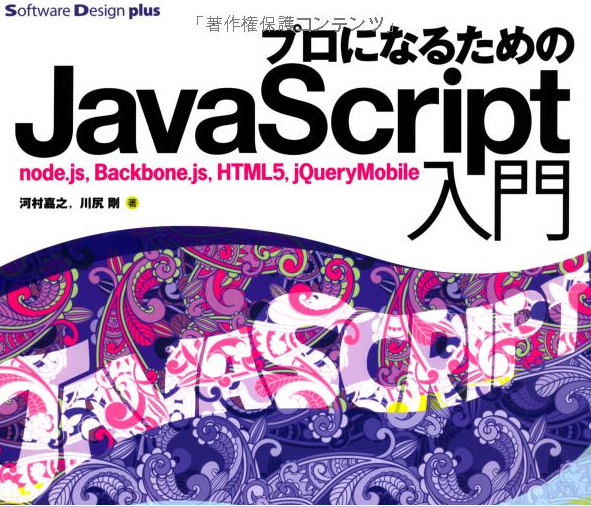
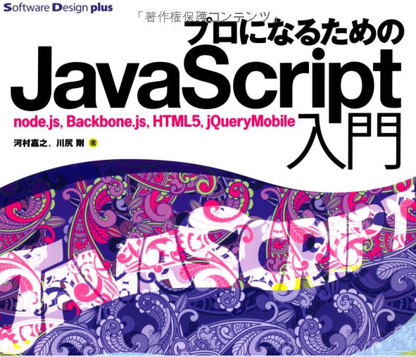

jsCafe Vol.8
Backbone.js [Events & Views]
Presented by Takeshi Kubokawa / Acrovision, LLC
Twitter: @minty_opera
Facebook: mintyopera
About Me
〜 活動 〜
cocos2d-x + cocos2d for iPhoneUnity- Qt
勉強会 -> QtCafe
My Dream
GUNDAM with Unity & cococs2d-xjsCafeFag Studio業務開発経験
目的
本日のプレゼンでは...
Backbone.jsでWEBアプリを作る上での
パターンと流れをつかもー！！
books & resources
 


Backbone.js
Review
What is Backbone.js ??
Backbone.js is WEB Application with MVC .
How difference with Traditional MVC and Backbone.js ??
Traditional MVC Frameworks vs. Backbone.js
MVC has
ModelViewController
Backbone.js has
ModelCollectionViewEventRouter -> View & Controller in MVC
Backbone.View
〜 View & Controller in MVC 〜
- properly build a DOM tree
- handle the DOM events that happened in the DOM tree
Keywords
- extend
- constructor / initialize
- el --> DOM Element
- $el --> has jQuery Object of "el" cashed automatically
- setElement
- attributes
- $(jQuery)
- render --> 描画処理
- remove
- delegateEvents
- UnitydelegateEvents
Backbone.Events
“ BackboneプログラミングではModelやViewなどさまざまな複数のオブジェクトを使ってアプリケーションを構築していく。その際、Eventsが提供するインターフェースを用いてオブザーバパターンを駆使し、オブジェクト間の結合を疎に保つ。”
Observer Pattern
〜 Questions 〜
疎結合と密結合とは??何故、疎結合なのか??
↓↓
〜 Answer 〜
アプリケーションの成長とともにオブジェクトの数が増加していくと全体を把握するのが困難になる。 密結合状態を放置していると、次第にアプリケーションへのちょっとした機能追加さえ困難になる
EVENTS
オブザーバパターンにおける発行者を作るためのもの
購買者と発行者と呼ばれるオブジェクトが登場する
購買者->発行者のイベントを購買する
発行者->購買者のメソッドを直接呼び出す
Keywords
- on
- off
- trigger
- once
- listenTo
- stopListening
- listenToOnce
Let's Make WEB Application with Backbone.js !!
⇩
ToDo
ToDos Apps
〜 手順 〜
Model & ViewViewEventAdd TaskCollectionValidate
まとめ
とりあえず、Modelをつくる
Collectionをつくる
ViewとEventの処理をつくっていく。
従来のMVCと比べてjsファイルだけでWEBアプリつくれるってサイコー！！
THE END
thank you for listening
Takeshi Kubokawa / Acrovision, LLC